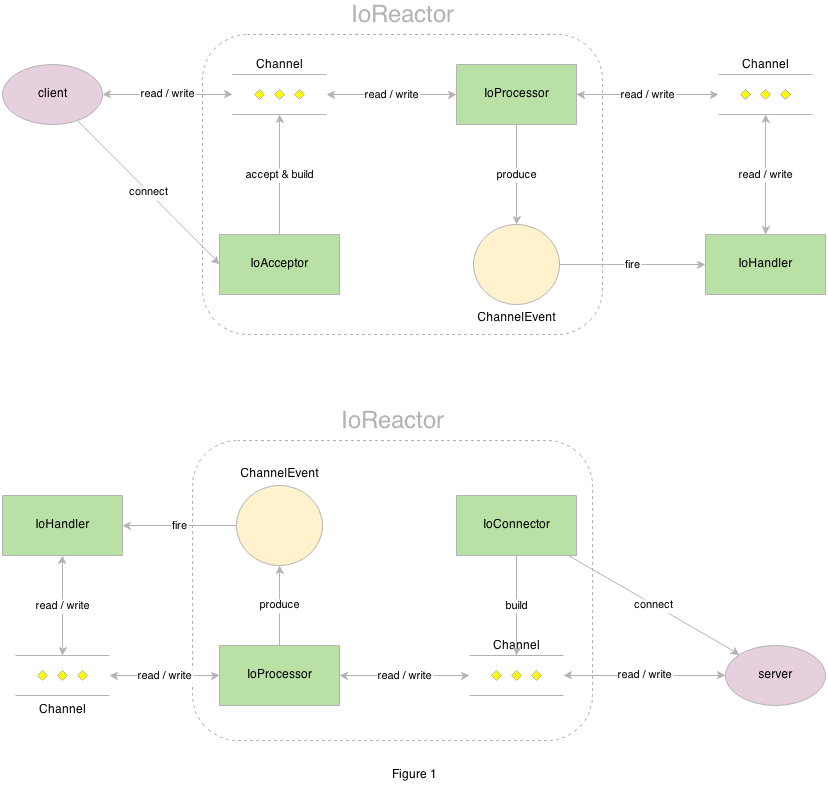

craft-atom-io
2014-06-19 mindwind
简介
一种 reactor io 模型 api 定义，其他组件例如 craft-atom-nio 实现该 api。
Reactor io 模型
Reactor io model architect as shown in the figure 1.
Reactor io 模型架构如图1所示。
Channel 是 io 操作的枢纽。
IoHandler 负责处理 io 事件。
IoAcceptor 负责接入到达的 io 请求。
IoProcessor 负责处理 io 读写。
IoConnector 负责连接服务端
ChannelEvent 是与某个 Channel 关联的事件。

实现者
目前只有一个实现者如下：
craft-atom-nio